Recenzja designu portalu wydarzeń
Podsumowanie
Portal ma czytelny szkielet: tydzień jako pas kolumn z dużymi numerami dni, karta „godzina · kategoria / tytuł / miejsce” i mapa, która przelatuje do wybranego wydarzenia. Na desktopie wygląda to porządnie. Słabnie, gdy tydzień się nie mieści: na 1440 i 1280 niedziela jest za krawędzią, a strzałka leży na treści. Na telefonie strona główna rozpada się w długie, puste kolumny. Strona dla szkół pokazuje w bieżącym tygodniu głównie dni, które minęły, i pusty weekend. Obie strony mówią dwoma różnymi językami UI (zdanie-filtr kontra sidebar z chipami). Mocne złote obwódki, cztery style przycisków i angielskie nazwy na mapie odbierają spójności więcej niż jakikolwiek pojedynczy element.
Inspektor: / 5 FAIL / 6 WARN, /dla-szkol 3 FAIL / 6 WARN. Zdjęcia kart pochodzą z mocków, więc ich dopasowanie do tematów nie jest oceniane. Przycisk „Motyw” i znaczek Next.js to narzędzia deweloperskie, też pominięte.
Krytyczne
krytyczneTelefon, strona główna: tydzień to pas pustych kolumn
/ · 390 px · features/events/components/WeekGrid.module.css, DayColumn.module.css
Na 390 px widać jedną kolumnę dnia i skrawek następnej. Wszystkie kolumny mają wysokość najdłuższego dnia (piątek, 6 wydarzeń), więc pod jedynym wydarzeniem poniedziałku jest ok. 1100 px pustej ramki. Kto przewija w dół, ogląda pustkę. Żeby zobaczyć kolejny dzień, trzeba przewinąć w bok. Nie ma paska dni, a na /dla-szkol taki pasek jest. Inspektor: panel-void 970 px w poniedziałku (desktop), edge-text, ucięte tytuły („Wystawa: mi…”).
Rekomendacja: do ok. 768 px pokazuj dni pionowo, jeden pod drugim: nagłówek dnia jako sticky, pod nim karty. Rzędy kart w poziomie są tu zbędne. Możesz też przenieść pasek dni z /dla-szkol (pn–nd z kropkami) i pokazywać jeden dzień naraz. Niezależnie od wariantu kolumny nie powinny się rozciągać: align-items: start.

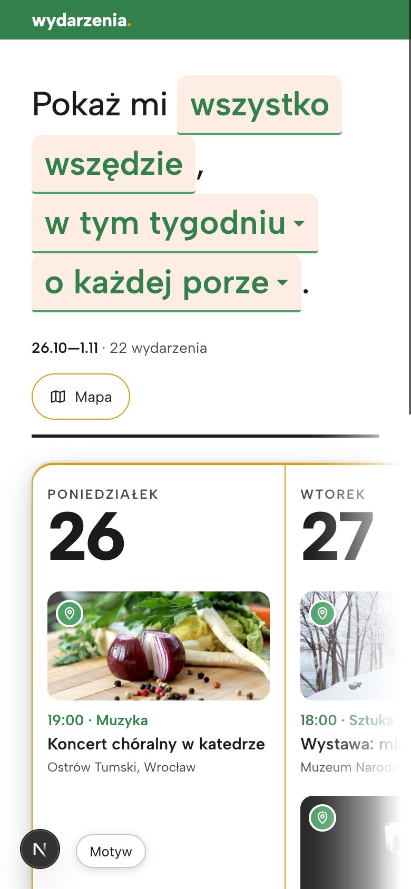

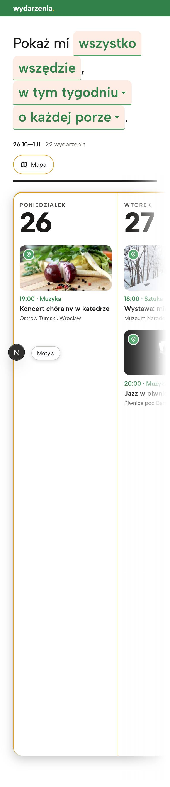

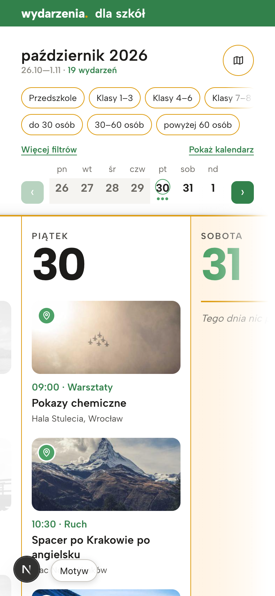
krytyczneTydzień nie mieści się na desktopie, a strzałka przykrywa treść
/ i /dla-szkol · 1440 i 1280 · StripControls.module.css, WeekGrid.module.css
Na 1440 widać 6 dni (niedziela za krawędzią), na 1280 pięć i pół. Zielony przycisk strzałki leży na kolumnie: na sobocie „31”, po przewinięciu na numerze „27”, na /dla-szkol na zdjęciu piątku. Pas wychodzi poza prawy margines, a lewy zostaje, więc ramka strony jest nierówna. Prawa krawędź gaśnie w gradiencie, który ścina też czarną linię nagłówka. Na kalendarzu tygodnia każdy dzień jest tak samo ważny, więc chowanie niedzieli to błąd.
Rekomendacja: od 1280 wzwyż ustaw 7 kolumn w fr (1360/7 ≈ 194 px na kolumnę wystarczy, jeśli zdjęcie w karcie ma niższy kadr). Przewijanie i strzałki zostaw dla węższych ekranów, a strzałki przenieś do paska nad siatką, obok zakresu dat, żeby nie leżały na kolumnach. Usuń też gradient na krawędzi.

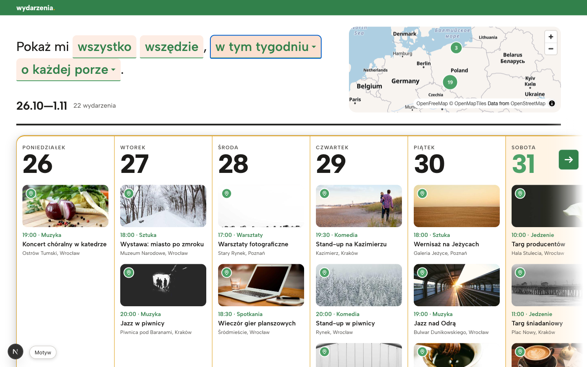

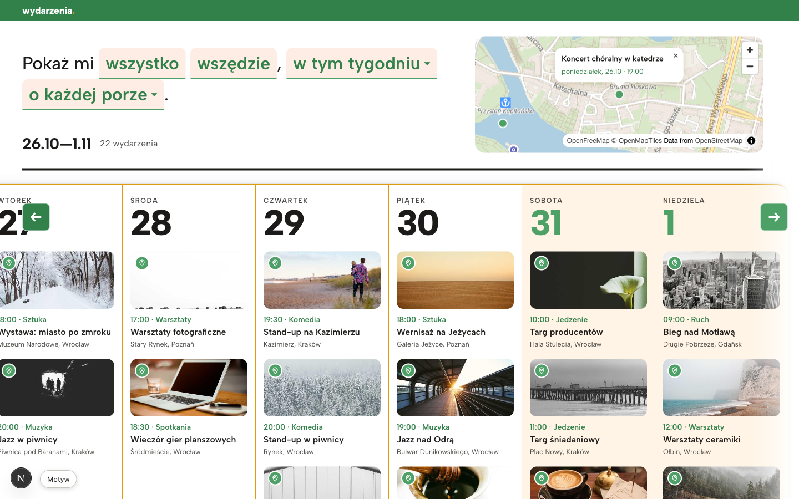
krytyczneDla szkół: bieżący tydzień to głównie minione dni i pusty weekend
/dla-szkol/2026-10-26 · 1440, 1280 · features/schools/components/SchoolsShell*, DayColumn
Dziś jest piątek. Spośród 4,5 widocznych kolumn tylko jedna, piątek, ma wydarzenia, które jeszcze się odbędą. Minione dni są wyblakłe prawie do bieli: kontrast tytułów na oko ok. 1,5:1, nie da się ich przeczytać, ale nadal zajmują miejsce. Sobota i niedziela to dwie szerokie kremowe kolumny z napisem „Tego dnia nic pasującego.” Licznik „19 wydarzeń” wlicza minione, a zostały 3. Strzałka wstecz wisi nad wyblakłą kolumną, a pas wchodzi pod sidebar (ucięte „…lna: sztuka”).
Rekomendacja: w bieżącym tygodniu zacznij od dziś, a minione dni zwiń do wąskich pasków z datą i liczbą (do rozwinięcia). W wariancie szkolnym zwęź weekend, gdy jest pusty. W liczniku podaj to, co ma znaczenie: „3 przed nami · 16 minęło”. Jeśli minione wydarzenia mają być widoczne, ich tekst musi mieć kontrast co najmniej 4,5:1. Przygaś zdjęcie, nie tekst.

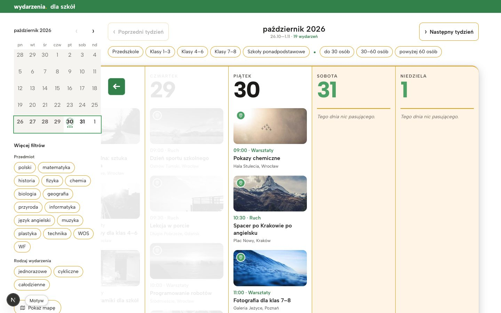

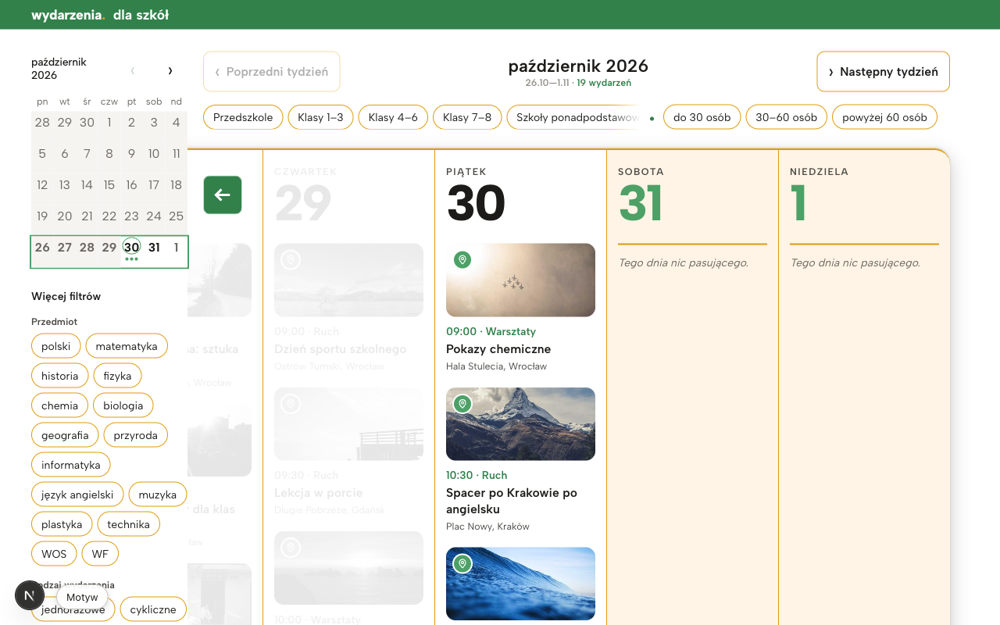
Ważne
ważneStrona główna: nie da się przejść do następnego tygodnia
/ · wszystkie szerokości · features/search/components/ChipDialog, Picker
Popover „w tym tygodniu” ma tylko opcje „dziś / jutro / w tym tygodniu / w weekend” i własny przedział z dwoma polami daty. Następnego tygodnia nie ma. Przewinięcie pasa kończy się na niedzieli. Na /dla-szkol są przyciski „Poprzedni / Następny tydzień”. W piątek, czyli wtedy, gdy ludzie planują weekend i kolejne dni, strona główna pokazuje głównie przeszłość.
Rekomendacja: dodaj strzałki ‹ › przy zakresie „26.10—1.11” (ten sam wzór co na stronie dla szkół) i opcję „w przyszłym tygodniu” w popoverze.

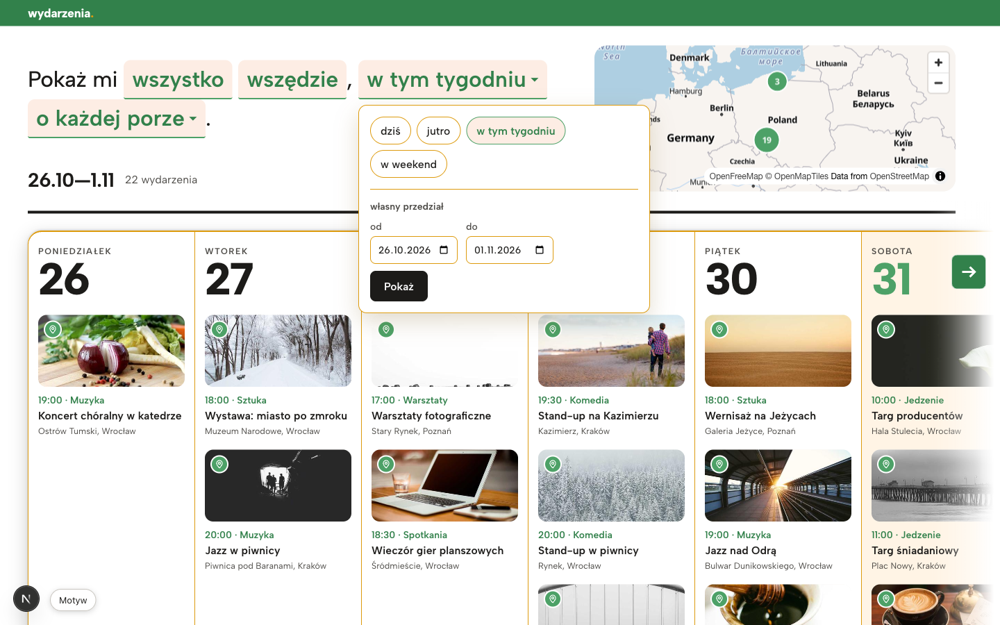

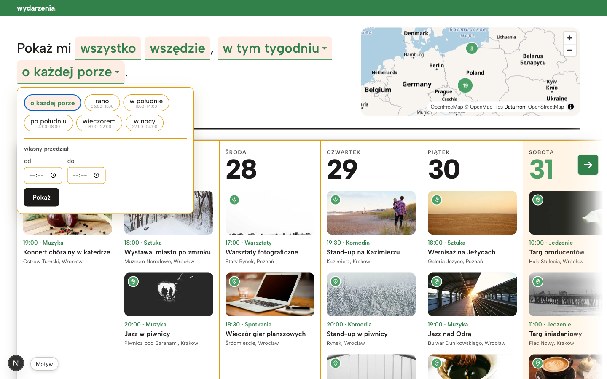
ważneStrona główna nie pokazuje „dziś” ani tego, co minęło
/ · wszystkie szerokości · DayColumn.module.css
Piątek 30 wygląda tak samo jak pozostałe dni. Wydarzenia z poniedziałku–czwartku mają pełny kontrast, jakby dało się na nie jeszcze pójść. Zielony numer dnia oznacza tu weekend, a zielony jest też kolorem akcentu i kategorii, więc „31” wygląda na wyróżnione. Strona dla szkół ma już oba stany (kółko na dziś, przygaszone minione), tylko w zbyt mocnej formie.
Rekomendacja: jeden język dla obu stron: dziś to kółko lub podkreślenie w kolorze akcentu przy numerze, minione to przygaszone zdjęcie i tekst drugorzędny (≥ 4,5:1), weekend to tylko tło kolumny. Zielony zostaje dla dziś i akcji.
ważneZdanie-filtr dominuje ekran i udaje przyciski
/ · 1440, 1280, 390 · SearchSentence.module.css, SentenceChip.module.css, Header.module.css
„Pokaż mi wszystko wszędzie, w tym tygodniu o każdej porze.” to największa rzecz na stronie (32 px, cztery brzoskwiniowe chipy). Tymczasem „wszystko” i „wszędzie” to zwykły tekst: w drzewie dostępności nie są przyciskami, a wyglądają identycznie jak dwa działające chipy. Na 390 zdanie zajmuje 4 linie i ok. 60% pierwszego ekranu (inspektor: headline-lines FAIL). Po otwarciu mapy pierwsze wydarzenie spada poniżej ekranu. Strona nie ma h1.
Rekomendacja: dopóki kategoria i miejsce nie działają, pokazuj je jako zwykły tekst zdania, a styl chipa zostaw tylko dla tego, co da się kliknąć. Na telefonie zmniejsz zdanie do 22–24 px. Dodaj h1, np. „Program tygodnia” (może być wizualnie ukryte, a zdanie zostaje widocznym tytułem). Zakres dat i licznik „22 wydarzenia” to nagłówek tygodnia, więc przenieś je bliżej siatki.

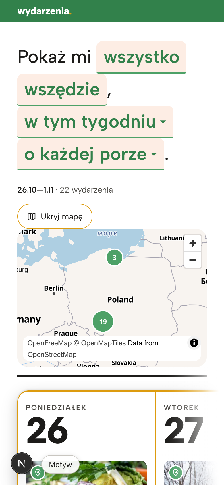

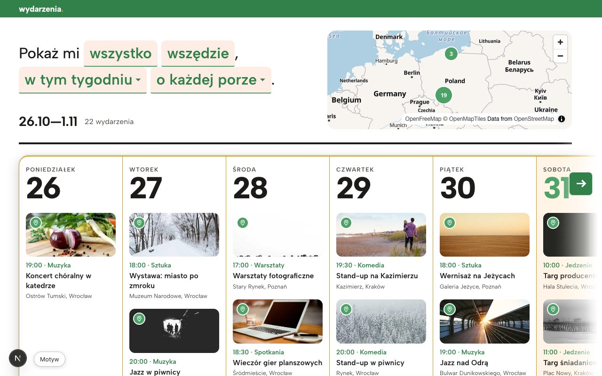
ważneDwa systemy UI i cztery style przycisków
obie strony · SentenceChip, SchoolFilters, WeekArrow, WeekMap, ChipDialog
Ta sama czynność (wybierz tydzień i zawęź) wygląda zupełnie inaczej na każdej stronie: na głównej zdanie z popoverami, dla szkół sidebar z kalendarzem miesiąca, chipami i przyciskami tygodnia. Przyciski mają cztery wyglądy: brzoskwiniowy chip z zieloną kreską, pigułka ze złotą obwódką, czarny „Pokaż” i zielone kwadraty strzałek (w dialogu mapy dodatkowo bladozielone w stanie nieaktywnym). Przycisk „Zamknij mapę” jest w lewym górnym rogu dialogu, a nie tam, gdzie oko go szuka. Inspektor: button-fx (cień na przyciskach).
Rekomendacja: ustal jedną parę: przycisk główny (jeden kolor, płaski) i drugorzędny (obrys lub ton), plus jeden chip filtra z jednym stanem „aktywny” (wypełnienie, jak „historia” na stronie dla szkół). Strzałki tygodnia rób zawsze tym samym komponentem. „Zamknij” (×) daj w prawy górny róg dialogu.

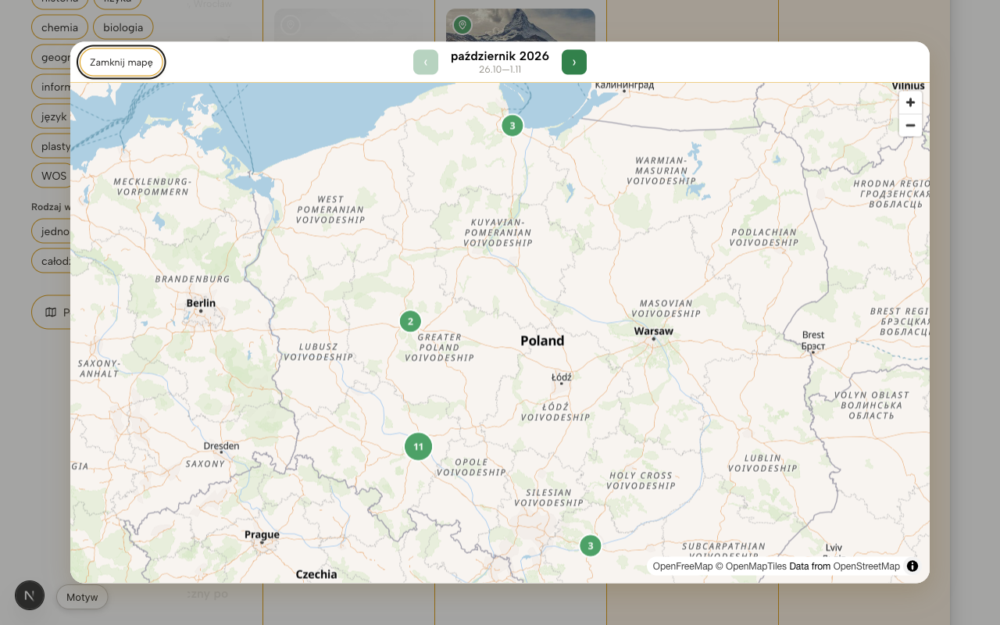

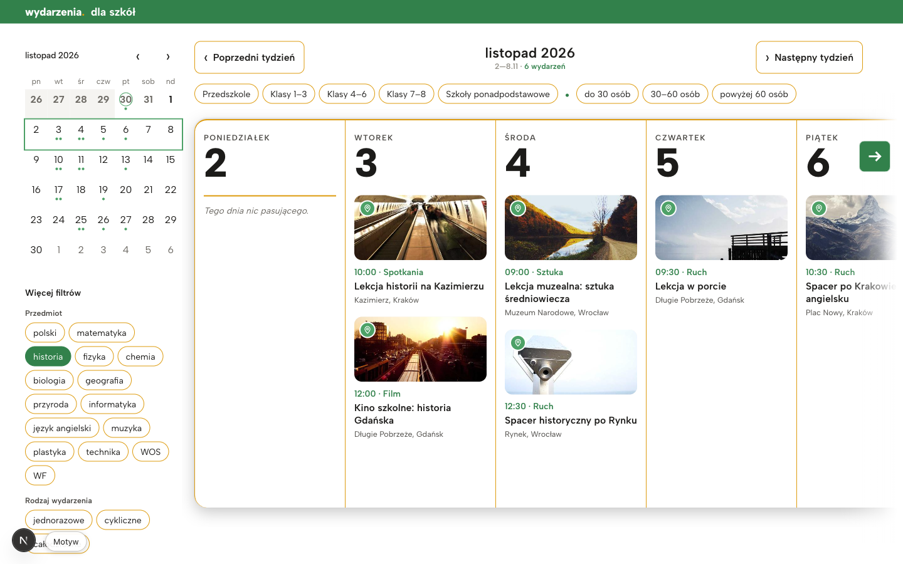
ważneZłote obwódki wszędzie, a do tego cień i gruba linia
obie strony · packages/ui/src/tokens.css (--color-border: #dd9b0e, --shadow-edge), Header.module.css (border-bottom)
Ramka tygodnia, każda kolumna, każdy chip i każdy przycisk mają obwódkę #dd9b0e (2,4:1 na bieli; inspektor heavy-borders). Pod nagłówkiem biegnie czarna linia 4 px, a tydzień ma jeszcze cień. Złoty to kolor kropki w logo. Rozsmarowany po każdej krawędzi przestaje cokolwiek wyróżniać, a ekran zamienia się w siatkę mocnych linii, które konkurują ze zdjęciami.
Rekomendacja: obwódki kolumn i nieaktywnych chipów zrób neutralne (ok. #e7e5e0), a separację dni oprzyj na odstępie i tle. Złoty zostaw na logo i ewentualnie na jeden wyróżnik (dziś). Wybierz linię 4 px albo cień ramki tygodnia, nie oba.
ważneMapa: angielskie nazwy, zły kadr startowy, atrybucja zakrywa mapę
/ (mapa w nagłówku, na 390 rozwijana) i dialog na /dla-szkol · EventsMap.tsx, WeekMap
W polskim interfejsie mapa pisze „Poland, Warsaw, Greater Poland Voivodeship, Czechia”. Na stronie głównej widok startowy obejmuje obszar od Danii po Ukrainę, choć wydarzenia są w czterech polskich miastach. Na 390 atrybucja zajmuje ok. 1/5 wysokości mapy. W dialogu szkół pełny styl OSM (drogi, numery tras) zagłusza zielone punkty. Minione wydarzenia wyglądają na mapie tak samo jak przyszłe. Popup podaje tylko tytuł i termin, bez miejsca. Przelot do wydarzenia z karty działa dobrze.
Rekomendacja: nazwy z name:pl, wyciszony styl (mniej dróg i etykiet), fitBounds do punktów tygodnia z marginesem, zwinięta atrybucja (ikona „i”). W popupie dodaj miejsce i miasto, a minione punkty przygaś.

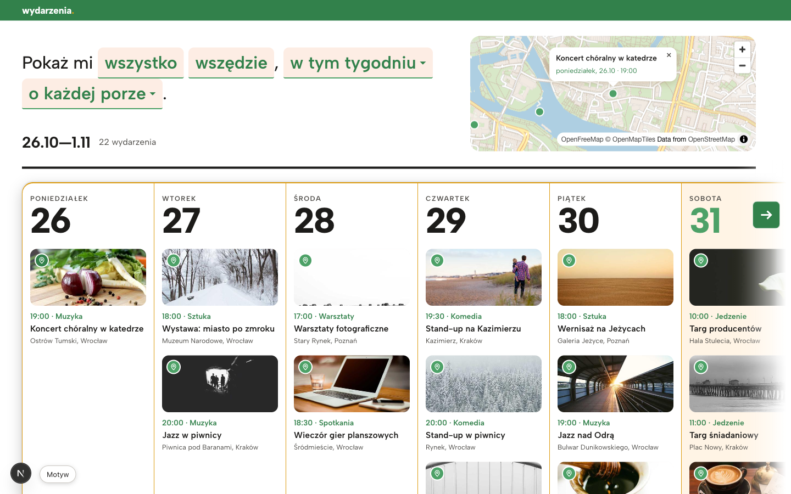

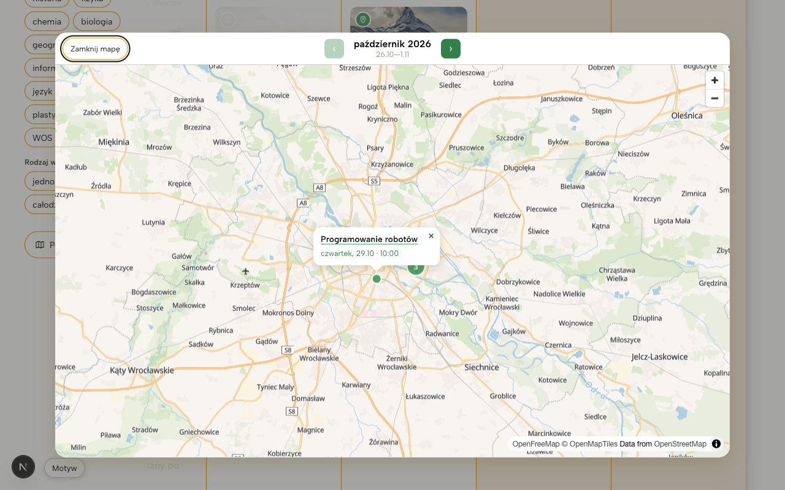
ważneKarta nie prowadzi dalej
obie strony · OccurrenceCard.tsx
Jedyna akcja na karcie to pinezka „Pokaż na mapie”. Tytuł i zdjęcie niczego nie otwierają, nie ma ceny, linku do organizatora ani informacji o zapisach (dla szkół: grupa wiekowa, liczba miejsc). Odbiorca znajduje wydarzenie i nie ma dokąd przejść.
Rekomendacja: nawet przed powstaniem strony wydarzenia zrób z całej karty link (np. do strony organizatora albo rozwinięcia z opisem). W karcie szkolnej pokaż 1–2 cechy, po których się filtruje (klasy, liczba osób), żeby było widać, dlaczego wydarzenie pasuje.
Drobne
- drobneNazwy dni wersalikami z rozstrzeleniem 0,12em (
DayColumn.module.css:52–53; inspektormicro-label). Numer dnia 65 px wystarczająco prowadzi, więc nazwę dnia daj zwykłym zapisem: „poniedziałek”, 14 px. - drobneGodziny pod porami dnia w popoverze mają 10 px („06:00–11:00”;
tiny-text). Minimum to 12 px. - drobneKontrast: „godzina · kategoria” w zieleni to 4,4:1, a zakres „26.10—1.11” na stronie szkół 3,1:1. Użyj
--color-accent-strongi ciemniejszego szarego. - drobneGodziny w kartach nie mają cyfr tabelarycznych (
tabular: 0%). Dodajfont-variant-numeric: tabular-numsdo meta karty i kalendarza miesiąca. - drobne„październik 2026” powtarza się na stronie szkół (sidebar i środek), a w sidebarze na 1280 łamie się na dwie linie. Środkowy tytuł mógłby nazywać tydzień („26 października – 1 listopada”).
- drobneChip „Szkoły ponadpodstawowe” na 1280 jest ucięty maską gradientową (
SchoolFilters.module.css:100). Lepiej zawinąć chipy do drugiej linii. - drobne„Tego dnia nic pasującego.” to jedyna kursywa w UI i nie daje nic do zrobienia. Lepiej prosto i z akcją: „Brak wydarzeń dla wybranych filtrów · Wyczyść filtry”.
- drobneNa telefonie mapa po rozwinięciu wypycha program pod ekran. Rozważ mapę jako pełnoekranowy arkusz, jak dialog na stronie szkół.
Co działa dobrze
- Duży numer dnia jako oś tygodnia: odczytujesz go od razu, ma charakter i trzyma rytm kolumn.
- Karta ma czytelną, stałą kolejność: godzina · kategoria w kolorze, tytuł, miejsce drobniej. W całym portalu jedna rodzina kroju (Albert Sans).
- Pinezka na karcie zbliża mapę do miejsca i otwiera popup. To dobre powiązanie listy z mapą, a popup w dialogu prowadzi z powrotem do karty.
- Zdanie „Pokaż mi …” to oryginalny pomysł na filtr, odróżnia portal od zwykłej listy wydarzeń. Wymaga tylko uczciwego stanu (patrz wyżej).
- Strona dla szkół na telefonie: pasek tygodnia z kropkami liczby wydarzeń i strzałkami to najlepszy wzorzec nawigacji w portalu. Warto go przenieść na stronę główną.
- Kalendarz miesiąca z kropkami wydarzeń pod datami jest zwarty i informacyjny. Aktywny filtr jest wyraźny (wypełniona zieleń).
- Struktura dostępności jest dobra: dni to
h2, karty toarticlezh3, przyciski mają nazwy („Pokaż na mapie: …”), jest skip-link.
Top 5 zmian o największym efekcie
- Telefon: dni pionowo albo pasek dni z /dla-szkol, bez rozciągniętych kolumn.Usuwa ok. 1100 px pustki i poziome przewijanie po jednym dniu.
- Desktop ≥ 1280: siedem kolumn w fr, strzałki poza siatką.Cały tydzień na jednym ekranie, nic nie leży na treści, marginesy strony są równe.
- Bieżący tydzień zaczyna się od dziś, minione dni zwinięte, wspólny znacznik „dziś” na obu stronach.Na stronie dla szkół z jednej użytecznej kolumny robią się cztery, a licznik mówi prawdę.
- Nawigacja tygodnia na stronie głównej (‹ 26.10—1.11 ›) i jeden system przycisków i chipów.Zamyka największą lukę funkcjonalną i scala dwie strony w jeden produkt.
- Ściszenie ramek i porządek na mapie: neutralne obwódki, złoty tylko w logo, polskie nazwy, kadr do punktów.Zdjęcia i zieleń akcentu zaczynają prowadzić, a mapa pokazuje to, co trzeba.
Surowe pomiary inspektora (zrzuty 1440/1280/390 i report.json) leżą w katalogu repo: .taste-skill/before/home/ i .taste-skill/before/dla-szkol/.